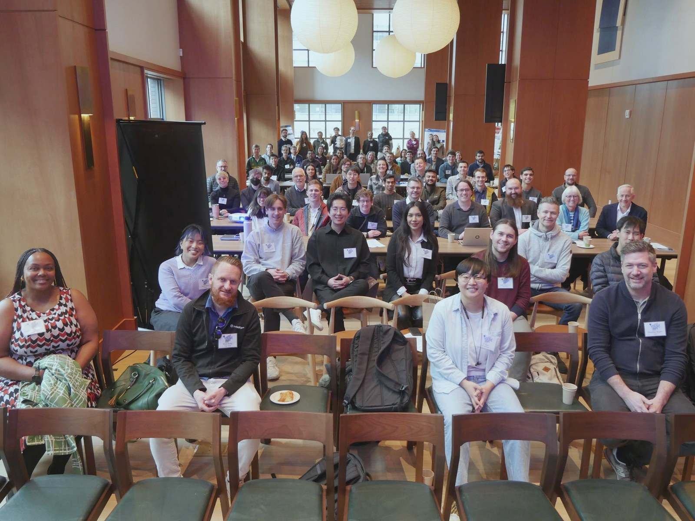

Volumetric Additive Manufacturing Symposium
VAM Symposium 2027
February 4–5, 2027 · University of California, Berkeley
The annual gathering for researchers and practitioners in volumetric additive manufacturing. Thursday: a hands-on OpenCAL build workshop. Friday: talks, panels, and posters.
OpenCAL volumetric printer. Photo: OpenCAL project, UC Berkeley
Organized by
UC Berkeley Department of Mechanical Engineering
Lawrence Livermore National Laboratory In collaboration
Jacobs Institute for Design Innovation Supporting partner
Who it is for
Is this for you?
Researchers, engineers, and students who build, use, or are curious about volumetric printing. No prior VAM experience is needed.
Topics span:
- Free. Registration costs nothing and is non-binding.
- One day or both. The Thursday workshop and the Friday symposium are registered separately; many people come only on Friday.
- Online option. The Friday symposium can be joined by video. The workshop is in person.
- Bring your work. The call for posters is open until December 8, 2026.
- Around SPIE. Photonics West runs January 30 – February 4 in San Francisco, about 40 minutes from Berkeley by BART.
Important dates
Key deadlines
Registration and the call for posters are open now.
Now open
Registration, the call for posters, and build workshop applications
December 8, 2026
Poster abstracts due
December 2026
Build workshop applications close
February 4, 2027
OpenCAL build workshop
February 5, 2027
Symposium: talks, panels, and posters
About the symposium
Bringing the volumetric printing community together
Volumetric additive manufacturing (VAM) forms an entire part at once by projecting patterned light into a photopolymer from many angles. In under a decade it has moved from a laboratory demonstration toward applications in biofabrication, optics, soft robotics, and industrial production.
The VAM Symposium is organized by the volumetric printing group at UC Berkeley in collaboration with Lawrence Livermore National Laboratory to bring researchers and practitioners in this field together in person. The program is single-track and discussion-oriented, combining plenary talks, moderated panels, a poster session, and extended time for informal exchange.
The 2027 symposium expands to two days. Thursday introduces a hands-on OpenCAL build workshop, in which participating teams assemble an open-source volumetric printer and take it home. Friday follows the established format of talks, panels, and posters.

Volumetric printing
The technology
Tomographic and holographic volumetric printing form an entire part at once by projecting computed light patterns into a rotating or static volume of photopolymer.


Program at a glance
Two days, two formats
Thursday, February 4 · CITRIS Invention Lab
OpenCAL build workshop
Five to ten teams assemble, align, and calibrate an OpenCAL volumetric printer from a kit, print a first part, and take the machine home. Places are allocated by application.
Workshop details →Friday, February 5 · The Gateway, Room 5340
Symposium
Two plenary talks, three moderated panels, a poster session over a catered lunch, optional lab tours, an open discussion, and an evening reception. 9:00 AM to 6:00 PM, single track.
Symposium schedule →Organizing committee
Organizers
University of California, Berkeley
- Hayden TaylorProfessor, Mechanical Engineering
- X SunMechanical Engineering
- Taylor WaddellMechanical Engineering
Organized in collaboration with Lawrence Livermore National Laboratory.
Sponsors and partners
Support the symposium
Registration is free. Catering, poster boards, and subsidized build kits for the workshop are funded by sponsors and partner organizations.
Sponsorship opportunities are available at several levels, including named support for the OpenCAL build kits. Sponsors are acknowledged on this site, in the printed program, and at the event.
Build kit sponsor
Fund one or more OpenCAL kits for workshop teams.
Symposium sponsor
Support catering, posters, and the reception.